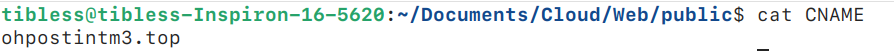

My Website & blog
中文：zh
My Website & blogHow it works?Procedure of deployWebsiteinstall Project structure & Commandsnpm run buildnpm run develop npm run deployBlog1. create a folder to contain this article as a project2. create index.md & edit it3. convert to index.html4. refer it in top index.md5. Multilingual supportInsight of Blog designHow I structure the project?Where does the design of this style come from?
Link: Yunming Hu's Personal Page
How it works?
My website is a static site generated using gatsby-themes and deployed on GitHub Pages, while my blog is handwritten and also deployed on GitHub Pages. If you're unfamiliar with how to use GitHub Pages, I recommend checking out this quickstart article for guidance.
Procedure of deploy
Website
install
clone the project and rm its .git and add your own:
xxxxxxxxxxgit clone https://github.com/LekoArts/gatsby-starter-portfolio-cara.gitcd gatsby-starter-portfolio-cararm -rf .gitgit init git remote add origin 'your github page'install dependnecies:
xxxxxxxxxxnpm installnpm install gh-pages --save-devadd script to
pacakge.json:
xxxxxxxxxx"scripts": { "develop": "gatsby develop", "deploy": "gatsby build --prefix-paths && gh-pages -d public", "build": "gatsby build --prefix-paths"}and modify gatsby-config.ts, here is a template you can change:
xxxxxxxxxxsiteMetadata: { siteTitle: `Your Site Title`, siteTitleAlt: `Your Site Subtitle`, siteHeadline: `A brief description about your site`, siteUrl: `https://yourdomain.com`, siteDescription: `A description of your site, suitable for SEO`, siteImage: `/your-image.jpg`, // Default image for social sharing siteLanguage: `en`, // Language setting author: `Your Name or Nickname`,}build & deploy
set branch
gh-pagesas branch to deploy, just ask GPT for help.then add your domain into file CNAME ubder public, create it if not exsited.
rebuild and deploy
the you can see the template on your domain.
Project structure & Commands
The website we deploy is generated using gatsby-themes, and the process is simple: just edit the .mdx files and run a few commands. The entire website is divided into four sections: Introduction, Projects, About, and Get in Touch. To edit the content in these sections, you can simply modify the .mdx files located in the folder $project/src/@lekoarts/gatsby-theme-cara/sections, where $project refers to your project folder. When you edit and build the project, the four files will be converted into .html and added to index.html. You can then deploy it using the command: npm run deploy. Here are all the commands and their usage:
npm run build
This command builds the entire project and places the generated files into the $project/public. It's important to note a key point that is easy to overlook: you need to add a CNAME file to the public folder that contains your own domain name. For example, my domain is ohpostint.top, so you should include this domain in the CNAME file, as shown in the figure below:


And before you build it, you can choose whether to clean the previous built files or not, whose command is gatsby clean.
npm run develop
After building your project, you can preview it locally before deploying it online. This command lets you preview the site while editing your .mdx section files in real-time. For example, after running this command, you can click the local server link to view the website in your browser. When you make changes to an .mdx file, take intro.mdx for instance, the updates will appear instantly in your browser, as shown in the video below:

npm run deploy
After debugging, you can deploy your website to your domain use this command.
Blog
My blog depends on no code generator. What you should to is just write markdown files in typora and export them as index.html & index_zh.html under the path. For example, you want to write an article about PCA algorithm, this is steps you should do:
1. create a folder to contain this article as a project
In my blog, an article is organized as a project that means you should put anything needed in your blog into its folder, and all of these folders are located in $project/post/. In this example, I name it pca:
xxxxxxxxxxmkdir ./post/pcacd ./post/pca2. create index.md & edit it
After you get into project of this article, you can start writing your blog. If you want to use picture, you should put them into $project/post/pca/asset/.
3. convert to index.html
After you ending editing, you should convert your index.md to index.html. I use the export function in Typora.
4. refer it in top index.md
Then you can edit index.md under project root, refering this article in it. And convert index.md under project root to index.html.
5. Multilingual support
You can create index_xx.md files for multilingual support, where xx represents your target language. For example, for Chinese: index_zh.md. Then, repeat steps 2 to 4. Additionally, you need to insert links to other language versions at the top of each index file. For instance, in the English index.md, you should insert:
xxxxxxxxxx中文版：[zh](./index_zh.md)and Iin the Chinese index_zh.md, you should insert:
xxxxxxxxxxEnglish: [en](./index.md)Due to the structure of our organization, these lines are almost fixed. This is one of the reasons why I chose this structure—it’s somewhat similar to a B+ tree.
Insight of Blog design
How I structure the project?
Home page is editing in index.html under project root. And articles are located in $project/post/. All article is named as 'index_*.html', '*' here is used to supprt multilingual versions. So you can refer all article easily. In each article folder, you can create anything of this article such as pictures, anmations and etc. without influnece the others.
Where does the design of this style come from?
This style is inspired by this website & typora theme Turing, which is in line with minimalist style. I will provide it in index.css & hugo.